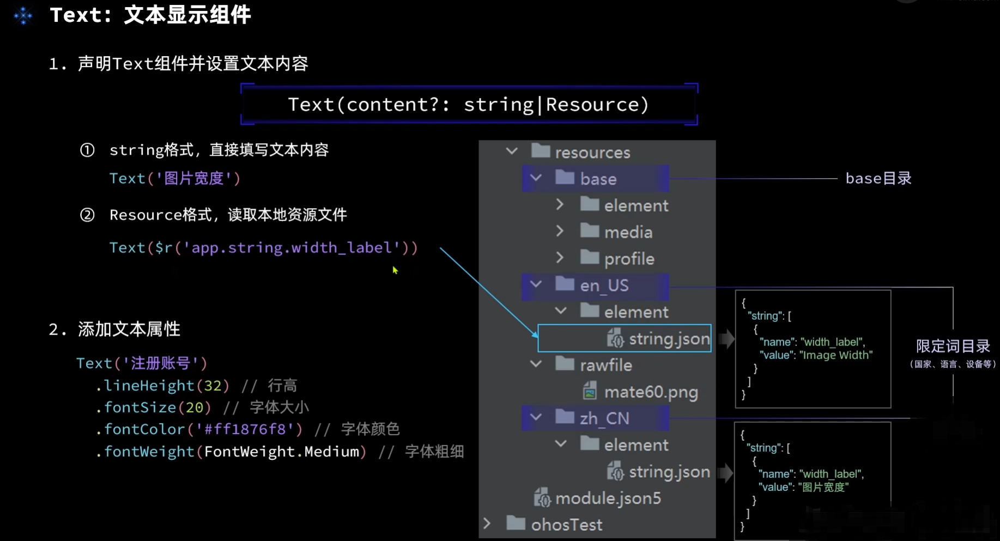
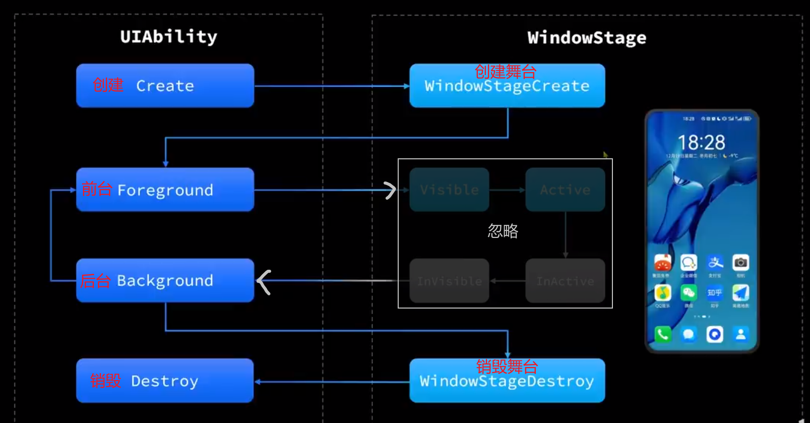

目录
目录一：HarmonyOS开发核心技术理念1+8+N 万物互联一次开发 多端部署可分可合 自由流转统一生态 原生智能ArkTS语言 ArkTypeScript ArkUI框架集成开发环境 DecEco Studio测试工具上架与分发 APPGallery Connect二：环境配置1. 安装软件教程文档2. 下载软件3. 安装SDK 4. 切换中文界面5. 预览器6. 模拟机调试（推荐）7. 真机调试（可选）8. 应用发布(HAPS)：三：TypeScript1. 变量声明2. 类型转换3. 条件判断4. 循环迭代5. 数组和枚举6. 函数7. 结构体8. 类 与 构造函数9. 接口10. 继承11. 模块导入导出四：Harmony终端应用开发1. 架构1.1 ※工程目录结构1.2 ※页面开发架构解析1.3 ※新建项目1.4 ※新建页面附：ArkTS API参考附：组件API参考2.START2.1 进入开发2.2 组件使用方法2.3 属性/事件使用方法2.3.1 ※通用事件2.3.2 ※通用属性 2.4 引用资源2.5 Column和Row容器3. 基础组件3.1 Text组件3.2 TextInput组件3.3 Image组件3.4 Button组件3.5 简单弹窗3.6 Slider组件小练习：改变图片大小3.7 ForEach 循环渲染3.8 跑马灯3.9 List列表容器小练习：商品界面4. 自定义组件 4.1 自定义组件4.2 自定义样式4.3 导出和导入4.4 自定义构建函数5. 页面路由小练习：页面路由6.任务进度页面6.1 Stack容器6.2 CheckBox复选框组件6.3 Progress进度条组件6.4 push() 方法6.5 splice() 方法6.6 划线7. 状态管理7.1 @State7.2 @Prop @Link @Provide @Consume 7.3 @Observed @ObjectLink8. Stage模型8.1 Stage8.2 应用配置文件app.json59. UIAbility9.1 UIAbility生命周期9.2 页面及组件生命周期9.3 UIAbility的启动模式10. 网络连接10.1HTTP数据请求10.2 第三方库axios11. 动画11.1 属性动画11.2 显示动画11.3 转场动画12. 弹窗1. 警告弹窗2. 列表弹窗3. 自定义弹窗4. 日期选择弹窗5. 时间选择弹窗6. 文本选择弹窗7. 菜单13.通知1. 基础通知2. 进度条通知3. 通知意图五：HMS Core1. Graphics2. Media3. AI4. Smart Device5. System
一：HarmonyOS开发
核心技术理念
1+8+N 万物互联
一次开发 多端部署
可分可合 自由流转
统一生态 原生智能
ArkTS语言 ArkTypeScript
ArkUI框架
集成开发环境 DecEco Studio

测试工具
上架与分发 APPGallery Connect
二：环境配置
1. 安装软件教程文档
2. 下载软件
下载并运行安装包后，勾选添加到PATH。
后续按照引导安装合适版本的VSCode和Node.js。按照引导安装文件。
3. 安装SDK
4. 切换中文界面
5. 预览器
6. 模拟机调试（推荐）
7. 真机调试（可选）
目前真机开发不完全完善，会有比较多的问题，不推荐花大量时间在配置真机调试环境上，待水到渠成在做也不迟。
①首先要生成签名文件和CSR文件，都需要使用英文命名。会生成两个文件秘钥.p12和证书请求文件.csr。
保存起来。秘钥名Alias和密码需要记住，后面会用到。
去用户与访问 -> 证书管理 -> 新增证书（一般选调试）。然后点击下载.cer文件
随后在用户与访问 -> 设备管理 -> 添加设备，需要设备UDID。
①添加系统环境变量（直接在 ‘开始’ 搜环境变量进入）：新建 > 变量名：HDC_SERVER_PORT 变量值：7035
②右键系统环境变量中的path，点击编辑 > 新建 > 浏览。找到软件安装SDK目录下-hmscore-版本号-toolchains路径，点击确认，完成将toolchains文件夹 配置到系统环境变量PATH里。
③多次点击手机的版本号；打开手机开发者模式；
④并打开 USB调试模式 和 仅充电模式下也允许ADB调试 两个勾选；
⑤用数据线将手机连接到电脑，选择传输文件；
⑥打开DevEco Studio软件
⑦ 按下win+r 输入cmd进命令行，输入hdc shell bm get --udid 获取udid。可能会一直失败。
在网页AppGallery Connect创建项目，并添加应用，包名需和Studio里签名的项目的一致。然后到我的项目-该应用-侧边栏HarmonyOS应用-HAP Provision Profile-发布，选择设备就可以发布了。然后下载.p7b文件
8. 应用发布(HAPS)：
应用HAPS打包：需要四个文件, .p12和.csr是在Studio的生成秘钥和证书请求文件 , .cer和.p7b是在APPGallery的 证书管理 和 Profile里 下载的。拿到四个文件后：
随后点击 顶部工具栏构建 > 编译HAPS ，生成安装包文件地址如下
需要借助HDC工具安装到手机上
hdc install + 地址（可右键文件复制绝对地址），前提是真机连接了 HDC。
如hdc install F:\CODE\DevEco_Studio_Projects\CXZAPP\entry\build\default\outputs\default\entry-default-signed.hap
三：TypeScript
TS是HarmonyOS的开发语言。TS相对于JS加入了静态类型检查功能，每一个变量都有固定的数据类型。
1. 变量声明
let 变量声明 ；const 常量声明
x// 关键字 变量:类型 = 内容let msg:string = '不分单双引号,没有分号结尾'let num:number = 12let B:boolean = true
let A:any = 'jack' //any类型，谨慎使用a=21
let U: string|number|boolean = 'mark' // union类型u=false
let S = { name:'marry' , age:22 } // Object对象类型
// 两种取值方法 ① s.name ② s['name']// 控制台输出日志 console.log()
// Array:数组， 其元素可以是任意类型let names: Array<string> = ['Rose','Heli']let ages: number[] = [1,5,9]// console.log( names[0] )
2. 类型转换
String(123) 或 xx.toString() 将数字类型转为字符串类型。
Number('123') 将字符串类型转为数字类型。当字符串不能转换为数字，得到的结果为NaN。
3. 条件判断
其他与众不同的特性：① === 判断是否相等 ② { } 因为没有分号，逻辑命令后都需要大括号括起来 ③ +
xxxxxxxxxx// if | else if | elselet a:number = 0if(a % 2 === 0) {console.log('该数'+ num + '为整数')}else if(a >0) {console.log(a + '大于0')}else {console.log(num + '为奇数')}
// TS中 空字符串、0、null、undefined都被认为是false，其他为truelet B : anyif(B){ console.log('数据存在:' + B)}else{ console.log('数据不存在')}
// switch caselet grade : string = 'A'switch(grade){ case 'A' : {console.log('优秀') break} case 'B' : {console.log('良好') break} case 'C' : {console.log('及格') break} case 'D' : {console.log('不及格') break} default {console.log('输入数据无效') break}}4. 循环迭代
xxxxxxxxxx// for for(let i =0, i<10 ,i++){ console.log('这是我第' + i + '次见你' )}
// whilelet i = 10while(i > = 0){ console.log('我还有' + i + '个苹果') i--;}
// 数组迭代 for in取数组角标 | for of取数组元素let objects: string[] = ['phone','tablet','watch','TV']for (const i in objects){ console.log(i + ':' + objects[i])}for(const obj of objects){ console.log(obj)}5. 数组和枚举
xxxxxxxxxxprivate arr: Array = [ {name:'华为P60pro', image:'1.png', price:'6500', discount:'300'}, {name:'华为Mate60pro', image:'2.png', price:'7100', discount:'100'}, {name:'华为Nova12', image:'3.png', price:'3999', discount:'200'}, {name:'荣耀MagicBook', image:'4.png', price:'5300'}] arr[0].name //引用
// 枚举 ,枚举就是将任意类型变量取一个显而易见的变量名字（实际上使用时该变量为number类型）enum Fruit{ APPLE = 'Apple' BANANA = 'Banana' PEAR = 'Pear'} Fruit.APPLE //引用6. 函数
xxxxxxxxxx// function声明函数 + 函数名 + (参数：参数类型) + 返回值类型function drive(speed: number, distance: number, destination: string) : nubmber{ console.log('你开车的速度是'+ speed +'km/h') console.log('距离是'+ distance +'km') console.log('你的目的地是'+ destination) return distance/spped}console.log('到目的地需要的时间是：' + drive(100,320,'NingBo') + '小时')
// 简写=>函数 ，不用写function关键字和返回值类型let add = (A: number, B:number) =>{ console.log(A+B)} add(5,7)
// 可选参数function SayHi(name? : string){ name = name ? name :'朋友' //三元运算符，若name存在则赋值name，若不存在则赋值'朋友' console.log('你好' + name)}// 默认参数，与上一个函数效果一致function SayHi(name : string = '盆友'){ console.log('你好' + name)}SayHi('Mali')SayHi()7. 结构体
xxxxxxxxxxstruct DatePickerDialogExample { . }DatePickerDialogExample() //调用方式
8. 类 与 构造函数
什么是类 class？
- 类class作为TS的一种变量类型存在于上下文之中，class不仅可以提供对于数据的约束，还可以提供变量、方法等的具体实现方式。
- 比如一个人 有他的属性：性别、年龄、爱好。行为 run()、 eat() 、learn()、 play()。
- 类需要实例化，因为人只是一个物种，通过实例化可以创造出 属性名相同 但属性值不同 的人。
- private私有属性，仅在类中可用。 public公有属性，全局可用。
- 注意 TS的class中 声明变量和函数并不需要关键字let、Function。直接写变量名、函数名即可。
x
class People{ public name: string private age: number private hobby: string run() { } eat() { }}new People( , , ) //① 实例化类 括号内填写参数值p:People = new People( , , ) //② 实例化类构造函数的存在是由于：
- 对于未分配初始值的变量，它的值是随机的，所以我们需要调用构造函数初始化变量。
- 某些场景不需要构造函数，这是由于已经给变量赋了初始值或内部有一个隐藏的构造函数完成了这件事。
xxxxxxxxxxclass People{ name: string age: number hobby: string constructor(name: string,age: number,hobby: string){ this.name = name this.age = age this.hobby = hobby }}
9. 接口
xxxxxxxxxx// 枚举enum Fruit{ APPLE = 'Apple' BANANA = 'Banana' PEAR = 'Pear'}
// interface定义接口叫做Gek，抽象方法 接收 枚举参数interface Gek{ hanshu(fruit:Fruit):void //不需要function关键字，不需要函数体，只接收参数，返回值类型为空}
// implements实现 接口 ,class Bep implements Gek{ hanshu(fruit:Fruit):void{ console.log('你最喜欢吃的水果是：'+ fruit) }}
// 创建实例化对象，new一个 a对象let a:Bep = new Bep() a.hanshu(fruit.APPLE)10. 继承
xxxxxxxxxx// private public // 构造函数的作用主要是完成对象的初始化工作 super关键字调用父类构造函数class Rectangle{ }
class Square extends Rectangle{ }11. 模块导入导出
xxxxxxxxxx//解决可复用性问题 export导出 import导入。 RectComponent.etsexport class Rectangle{ public width : number public height : number constructor(width : number,height : number){ this.width = width this.height = height }}
export function area(rect: Rectangle):number{ return rect.width * rect.height}
// 在另一个文件中导入。 Index.etsimport {area,Rectangle} from 'url' // import rectangle from '../ ' 或 './'let t = new Rectangle(5,8)console.log('面积是：' + area(t))四：Harmony终端应用开发
1. 架构
1.1 ※工程目录结构
重点关注前两个entry 和 app.json5 。 index.ets是主页面，resource放置的是开发使用到的图片、字符等资源
※ AppScope > app.json5：应用的全局配置信息。
※ entry：(重点)
应用/服务模块，编译构建生成一个HAP。src > main >
ets：用于存放ArkTS源码。
entryability：应用/服务的入口。
pages：应用/服务包含的页面。
resources：用于存放应用/服务所用到的资源文件，如图形、多媒体、字符串、布局文件等。如下：
base>element 包括字符串、整型数、颜色、样式等资源的json文件。每个资源均由json格式进行定义，例如：boolean.json：布尔型。color.json：颜色。float.json：浮点型。intarray.json：整型数组。integer.json：整型。pattern.json：样式。plural.json：复数形式。strarray.json：字符串数组。string.json：字符串值。 base>media 多媒体文件，如图形、视频、音频等文件，支持的文件格式包括：.png、.gif、.mp3、.mp4等。 rawfile 用于存储任意格式的原始资源文件。rawfile不会根据设备的状态去匹配不同的资源，需要指定文件路径和文件名进行引用。
module.json5：Stage模型模块配置文件，主要包含HAP的配置信息、应用在具体设备上的配置信息以及应用的全局配置信息。
oh_modules：用于存放三方库依赖信息。关于原npm工程适配OHPM包管理器操作，请参考历史工程适配OHPM包管理。
build-profile.json5：当前的模块信息、编译信息配置项，包括buildOption、targets配置等。
hvigorfile.ts：模块级编译构建任务脚本。
oh-package.json5：配置三方包声明文件的入口及包名。
build-profile.json5：应用级配置信息，包括签名、产品配置等。
hvigorfile.ts：应用级编译构建任务脚本。
1.2 ※页面开发架构解析
- @Component 是用来装饰自定义组件的。如@Component struct xx{ } ，只需要调用xx( )就可以使用了。
- @Entry代表每个页面入口，也就是 页面预览器 开始的地方。每个页面只有一个入口。
- @State是监控变量，一旦变量改变，则对应使用该变量的地方也会刷新。
- build( ) { } 是用来构建页面UI的。
- 在组件后面用 .xx 来使用属性和方法，.OnClick( ()=> { } )是点击事件回调。
- Row() 和 Column() 可以相互嵌套。Row()中的组件横向排列，Column()中的组件竖向排列。
- export和import ，如果需要自定义组件在其他文件使用，则使用 export 关键字导出， @Component export struct xx{ } ，在其他文件内使用 import {xx，yy} from '地址 ' 就可以了。
1.3 ※新建项目
1.4 ※新建页面
附：ArkTS API参考
仅供查阅文档时使用
Ability框架 公共事件与通知 包管理 UI界面 图形图像 媒体 资源管理 后台任务 安全 数据管理 文件管理 电话服务
网络管理 通信与连接 系统基础能力 设备管理 帐号管理 语言基础类库 测试
附：组件API参考
仅供查阅文档时使用。在编程过程中，打出组件名后，可将鼠标悬停在文字上，即可查看该组件的API。
通用属性 通用事件 基础组件 容器组件 媒体组件 绘制组件 画布组件 动画 全局UI方法
2.START
2.1 进入开发
xxxxxxxxxx// 再次重申，页面主要架构，为固定格式@Entry // ※标记页面入口，一个页面只有一个，不是页面入口的组件不标记@Component // ※标记自定义组件struct Index { // ※使用结构体包含代码，注意Index是应用启动入口，在module.json5文件里面定义了，整个APP只能有唯一的Index名，多个页面可以自定义结构体名字，如ChangeImageSize ， GoToOtherPage 等等。 //这里定义一些变量如，@State Banana: string = '香蕉' ，@State代表监控变量的实时变化 Build(){ // ※build方法构建UI //Build里面填写 各种自定义组件或容器 }}2.2 组件使用方法
xxxxxxxxxx// 基础组件使用案例 只需要 组件名() 即可调用，不添加其他内容会直接使用默认样式。Text('你好') //文本textInput({text:'默认已输入文本', }) //输入框Image('$r(app.media.icon)') //图片Button('点我') //按钮Slider({value: 200, min: 30, max: 300, step: 1}) //滑动条 ，默认值，最小，最大，滑动步长Marquee({start: true, step: 35, fromStart: true, src: '百亿补贴'}) //跑马灯滚动显示， 是否开始滚动，滚动速度，是否从头开始滚动，要滚动显示的文字2.3 属性/事件使用方法
通过在组件后使用 .xx 的方式进行配置，需要时可以查阅文档有哪些API：通用属性，通用事件，独有属性等等
xxxxxxxxxx// 示例：组件如何添加 属性(样式) 和 方法(事件回调) ，如Text组件Text('你好啊') .height('20').width('90%').fontSize('20').padding('5').fontColor('#000') //通用属性.onClick( () => { } ) // 通用点击事件，大括号内(可以为空) 填写方法，例如弹窗、打印日志等。.textAlign(TextAlign.Center) // 独有属性，专门设置Text组件在容器中的布局2.3.1 ※通用事件
如点击事件 onClick( () => {} ) ,触摸事件，鼠标事件等等。
2.3.2 ※通用属性
尺寸约束：宽.width() 高 .height() 大小.size() 外边距.margin(' ') 内边距.padding(' ') 权重.layoutWeight(1)
尺寸约束.constraintSize({minWidth : ,maxWidth : ,minHeight : ,maxHeight : })
位置约束：相对位置.align(Alignment.BottomEnd) 偏移.offset{x: 0,y: 0 }
内边距.padding({left: , top: , right: , bottom: }) 外边距.margin({left: , top: , right: , bottom: })
边框： .border-width()宽度 .border-color() 颜色 .border-radius()圆角
字体样式：.fontSize大小 .fontWeight粗细 .fontColor颜色 .fontFamily字体 .fontStyle样式 .lineHeight行高
背景:.backgroundColor() 背景颜色，.backgroundImage() 背景图片 , .opacity(1) 透明度，.display('flex')是flex否none渲染
颜色表示方法：①rgb(255, 255, 255) ②rgba(255, 255, 255, 1.0) ③ HEX格式：#rrggbb，#aarrggbb④枚举格式：black
还有 颜色渐变 、触摸控制、显隐控制 等等等等。
2.4 引用资源
Resource表示可以使用引用资源。首先阅读Resource有关说明，该说明描述了如何引用资源。
- 使用$r('app.xx.xx')引用应用资源。如$r( 'app.media.xx' | 'app.string.xx' | 'app.color.xx' | 'app.profile.xx') 等等
- 使用$r('sys.xx.xx') 引用鸿蒙系统预置资源。如$r('sys.media.ohos_app_icon')
- $rawfile('xx.png')引用rawfile文件中的资源，该方式必须带后缀。
- 注意地址需要为string类型 ’ ‘
xxxxxxxxxx// 引用示例如下Text( $r('app.string.txt') )Image( $r('app.media.icon') )Image( $r('sys.media.icon1') )Image( $rawfile('rawfile.icon2.png') )Color和String文件夹里的资源可以使用 Color.White 的方式引用
2.5 Column和Row容器
Row() 中的组件 横向排列，Column() 中的组件 竖向排列。
Column() 和 Row() 可相互嵌套。
space：是控制容器内组件的间距的。 Column({ space: 50 }) { }
主轴和交叉轴： Column主轴为 | ，Raw主轴为— 。交叉轴则相反。
- 主轴 .justifyContent(FlexAlign.)方法 设置子组件在主轴方向上的对齐格式。
- 交叉轴 .alignItems.VerticalAlign | HorizontalAlign方法 设置子组件在垂直|水平方向上的对齐格式。
- 注意：必须先对容器设置 宽度/高度，否则上述方法可能不会生效
主轴对齐方法
交叉轴对齐方法
3. 基础组件
3.1 Text组件
API : Text(content?: string|Resource) 如:Text('你好')
表示：Text组件，属性名为content ，且为非必选（?）。content属性值为字符串string或从 系统/应用 资源调用。

3.2 TextInput组件
API： TextInput( {placeholder?: ResourceStr , text?:ResourceStr } )
3.3 Image组件
若使用网络地址图片，则需要申请网络访问授权。在指南-安全-访问控制授权申请。通过配置module.json5实现。"requestPermissions":[ "name" : "ohos.permission.INTERNET" ] 。应用权限列表。
3.4 Button组件
组件都有默认样式，调用很简单，Button('按钮名')
具体样式需求
3.5 简单弹窗
xxxxxxxxxx组件.onClick(()=> { //点击事件 AlertDialog.show( { '你好' } )})
3.6 Slider组件
小练习：改变图片大小
主要使用了，Text 、TextInput、Image、Button、Slider和 AlertDialog弹窗组件。

xxxxxxxxxx// ets/pages/ChangeImageSize.etsimport { Header } from '../Component/Header'@Entry //标记入口组件@Component //自定义组件struct ChangeImageSize { //使用结构体来创建组件UI @State myImageSize: number = 200 //监控变量 图片大小 @State myInputValue: number = 0 //监控变量 输入框输入值 build() { //使用build() {} 方法构建UI Column() { //整体采用列式布局。内部包含多个Row容器，Row容器内组件横向布局 Header() Row(){ //图片 Image($r('app.media.icon')) .width(this.myImageSize) .padding(5) .interpolation(ImageInterpolation.High) //图片插值，减少锯齿 }.height('40%')
Row(){ //按钮 改变图片大小 Button('放大') .fontSize(50) .onClick(()=>{ if(this.myImageSize<300) {this.myImageSize += 10} }) Blank(20) //Blank()方法可以在容器内创造空白，可用于调整间距 Button('缩小') .fontSize(50) .onClick(()=>{ if(this.myImageSize>30) {this.myImageSize -= 10} }) }.margin(50)
Row(){ //输入框 输入数值改变图标大小 Text('图像大小: ').fontSize(15) TextInput( {placeholder:'请输入30-300的整数'}) //placeholder输入框内提示词 .placeholderColor('#f36') .height(60) .type(InputType.Number) //输入类型为Num .maxLength(3) //最大输入字符 .textAlign(TextAlign.Start) .onChange( value => { //输入值改变时触发回调 this.myInputValue = Number(value) //Number()方法 将字符串进行类型转换，若失败返回NaN }) .onSubmit(() => { //点击回车键 的触发回调 //符合范围则给图片赋值 if(this.myInputValue>=30 && this.myInputValue<=300) { this.myImageSize = this.myInputValue } else if(this.myInputValue<30){ // 弹窗 AlertDialog.show({message: '输入的值小于30'}) //使用AlertDialog.show({message: ''})方法 } else { AlertDialog.show({message: '输入的值大于300'}) }
}) }.margin(50)
Slider({value: this.myImageSize, min: 30, max: 300, step: 1, style: SliderStyle.InSet, direction: Axis.Horizontal}) //滑动条 改变图标大小 .onChange( value => { this.myImageSize = value }) } .width('100%') .height('100%')
}}3.7 ForEach 循环渲染
使用ForEach( )方法时我们需要首先定义
类：用于定义循环渲染部分的属性，如name , age, URL, message等等, 再使用构造函数constructor(){}初始化。
xxxxxxxxxxclass MyRouter {title: stringurl: stringconstructor(title: string, url: string){this.title = titlethis.url = url}}数组：定义一个数组，存放多个类的实例。 也可以只定义一个数组。
x
private arrRouter:Myrouter[] = [ // 格式 数组名:类名[] = []new MyRouter('图片缩放实例', 'pages/'),new MyRouter('商品列表实例', 'pages/')]ForEach实现
x
ForEach( arrRouter , //要循环渲染的数组名 (item:any , index?: number) =>{ //例:(数组名：类名)=>{ } //要循环渲染的 组件及其样式} , KeyGenerator?:(item:any , index?: number):string =>{ } //选填 ，键生成函数)
3.8 跑马灯
xxxxxxxxxxMarquee({ start: true, //是否开始滚动 step: 35, //滚动速度 fromStart: true, //是否从头开始滚动 src: '百亿补贴' //要滚动显示的文字}).width('180').fontSize(50).fontColor('#F36').fontWeight(FontWeight.Bold)we13.9 List列表容器
- List容器是可以滑动的。需要设置 宽width 和 高layoutWeight(1)
- List既可以是Column纵向Vertical布局，也可以是Row横向Horizontal布局。
- List中只能包含ListItem( ){ }组件，可以包含多个ListItem。
- ListItem中只能有一个根组件。
List({space: 20}){ ListItem(){//列表项类容 ，ListItem()作为一个约束，只能包含一个 根 组件 Row(){} } ListItem(){ Test('你好') }}.width('100%').listDirection(Axis.Vertical) // 或.listDirection(Axis.Horizontal).layoutWeight(1) // 除了标题部分控件，其余全部分配给List
小练习：商品界面
使用了循环遍历，跑马灯，列表，中划线，if else判断。
xxxxxxxxxx// ets/pages/ItemPage.etsimport { Header } from '../Component/Header'class Products{ name: string image: any price: number discount: number //构造函数 用于初始化变量 constructor(name: string, image: any, price: number, discount: number) { this.name = name this.image = image this.price = price this.discount = discount }}
@Entry@Componentstruct ItemPage { private productItems: Array<Products> = [ //定义数组 继承Products类 new Products('华为P60pro', $r('app.media.icon'),6299,300), new Products('华为Mate60pro',$r('app.media.icon'),6999,0), new Products('华为Nova12', $r('app.media.icon'),3999,200), new Products('华为VisionPro',$r('app.media.icon'),17999,0), new Products('荣耀MagicBook',$r('app.media.icon'),5299,300) ]
build() { Column({space:5}) { Header() Row({space:5}){ Button('返回').backgroundColor('#FF9966') Marquee({ start: true, //是否开始滚动 step: 35, //滚动速度 fromStart: true, //是否从头开始滚动 src: '百亿补贴' //要滚动显示的文字 }).width('180').fontSize(50).fontColor('#F36').fontWeight(FontWeight.Bold) Button('搜索').backgroundColor('#FF9966') } List({space:8}){ ForEach( this.productItems, (productItems:Products) => { if(productItems.discount){ //补贴价>0时执行 ListItem(){ Row({space:5}){ Row(){ Image(productItems.image).width('120').height('120').margin({left:10}) }.width('35%')
Column(){ Text(productItems.name) .fontSize('30') .fontWeight(FontWeight.Bold).align(Alignment.Start) Text('原价￥' + productItems.price) .fontColor('#2D2736') .fontSize('24') .decoration({type:TextDecorationType.LineThrough}) Text('折扣价￥' + (productItems.price-productItems.discount)) .fontColor('#F36').fontSize('24') Text('补贴￥' + productItems.discount) .fontColor('#F36').fontSize('24') }.width('65%') }.height('25%') } }
else { //无补贴的情况 ListItem(){ Row({space:5}){ Row(){ Image(productItems.image).width('120').height('120').margin({left:10}) }.width('35%')
Column(){ Text(productItems.name).fontSize('30').fontWeight(FontWeight.Bold).align(Alignment.Start) Text('￥' + productItems.price).fontColor('#F36').fontSize('24')
}.width('65%') }.height('18%') } }
} ) }.width('100%').height('100%').layoutWeight(1).listDirection(Axis.Vertical)
} .backgroundColor('#a9a9a9') .width('100%') .height('100%')
}}4. 自定义组件
4.1 自定义组件
- 使用@Component标识；
- 使用export xx导出，使用 import {xx} from 'url'导入；url如何填写：./代表当前目录，../代表上一级目录。使用文件的相对地址。
- 使用结构体包含；
- 用Build(){ }方法构建UI；
- 首先在ets文件夹下新建一个Component文件夹，在其中新建一个ArkTS文件，文件内包含自定义组件代码。
x
@Component struct Header { //export导出 Build(){ Row({space:5}){ Image('') text('页面标题') Image('') } }}4.2 自定义样式
xxxxxxxxxx@Styles function card(){ .width('95%') .padding(20) .backgroundColor(Color.White) .borderRadius(15) .shadow({radius: 6, color: '#1F000000', offsetX: 2, offsetY: 4})}
Text().card //通用样式 使用方法4.3 导出和导入
xxxxxxxxxxexport struct Header { . } // 导出：exportimport {Header} from '../Component/Header' // 导入：import {名字} from '地址'4.4 自定义构建函数
x
@Builder deleteButton(){ Button(){ Image($r{'app.media.ic_delete_filled'}).fillColor(Color.White).width(20) }.width(20).height(20).type(ButtonType.Circle).backgroundColor(Color.Red) .onCLick(() => {})}
5. 页面路由
页面路由Router主要是实现页面跳转的管理。
小练习：页面路由
使用了ForEach循环渲染，Router页面路由，@component自定义组件
自定义Header组件 ：定义页面顶部标题样式和实现返回
xxxxxxxxxx// ets/components/Header.etsimport router from '@ohos.router'/*@Entry //取消@Entry注释进行调试样式*/@Componentexport struct Header{build(){Row({space:'5'}){Image($r('app.media.ic_public_back')).width('15%').margin('5').interpolation(ImageInterpolation.High).onClick(()=> {router.back()})Text('页面标题').fontColor($r('app.color.Orange')).width('60%').fontSize(40).fontColor('#ff').textAlign(TextAlign.Center)Image($r('app.media.ic_public_view_list_filled')).width('15%').margin('5').interpolation(ImageInterpolation.High)}.width('100%').height('8%')}}Index主页面：实现去往各页面的跳转
x
// ets/pages/Index.etsimport router from '@ohos.router'import { Header } from '../Component/Header'class MyRouter { title: string url: string constructor(title: string, url: string){ this.title = title this.url = url }}
@Entry //标记入口组件@Component //自定义组件struct Index { //使用结构体来创建组件UI
private arrRouter: MyRouter[] = [ // 格式 数组名:类名[] = [] new MyRouter('图片缩放实例', 'pages/ChangeImageSize'), //小练习，图片缩放示例 new MyRouter('商品列表实例', 'pages/ItemPage'), //小练习，商品列表示例 new MyRouter('各种弹窗实例', 'pages/DialogPage'), //参考附录：弹窗 new MyRouter('各种通知实例', 'pages/Notification') //参考附录：通知 ]
build() { //使用build() {} 方法构建UI List(){ ListItem(){ Header() } ForEach( this.arrRouter, //这里使用 this.数组名 (arrRouter: MyRouter) => { //这里直接使用 数组名:类名 ListItem(){ Column(){ Button(arrRouter.title).fontSize('45').margin(10) .onClick( ()=>{ router.pushUrl( //压栈方法 {url: arrRouter.url , params: arrRouter.title},//页面跳转地址和传参 router.RouterMode.Single , //页面跳转模式 Error => { if(Error){ //异常处理 console.log('路由失败,errCode: '+ Error.code +' ,errMsg: '+ Error.message) } } ) }) }.width('100%').layoutWeight(1) } } ) }.width('100%').height('100%') }}
6.任务进度页面
6.1 Stack容器
堆叠容器，子组件按照顺序依次入栈，后一个子组件覆盖前一个子组件。
Stack({ alignContent?: Alignment }) { }
alignContent设置子组件在容器内的对齐方式。
6.2 CheckBox复选框组件
Checkbox(options?: {name?: string, group?: string }) ，options代表可选择的参数。
支持的属性：select：boolean 设置多选框默认是否选中。
selectedColor：ResouceColor 设置多选框选中状态颜色。
事件回调：还支持通用事件回调
| onChange(callback: (value: boolean) => void) | 当选中状态发生变化时，触发该回调。- value为true时，表示已选中。- value为false时，表示未选中。 |
|---|
6.3 Progress进度条组件
Progress(options: {value: number, total?: number, type?: ProgressType})
指定当前进度值，进度总长，进度条类型
6.4 push() 方法
push方法可以向数组的末尾添加元素，并返回数组的长度
xxxxxxxxxxthis.myTasks.push(new myTask())this.totalTask = this.myTasks.length6.5 splice() 方法
splice方法可以对数组内的元素进行删除操作。
xxxxxxxxxxthis.arr.splice(start)this.arr.splice(start, deleteCount) //开始的角标，删除数量this.arr.splice(start, deleteCount, item1)this.arr.splice(start, deleteCount, item1, item2, itemN) 6.6 划线
xxxxxxxxxx.decoration({type:TextDecorationType.None}) // 无.decoration({type:TextDecorationType.Underline}) // 下划线.decoration({type:TextDecorationType.LineThrough}) // 中划线.decoration({type:TextDecorationType.Overline}) // 上划线
7. 状态管理
7.1 @State
状态(State)：是指驱动视图（UI界面）更新的数据。
x
@State message: string = 'Hello World'tips:对于第三点无法更新的情况，可以使用对变量重新赋值的方法进行更新。
7.2 @Prop @Link @Provide @Consume
当父子组件之间需要数据同步时，可以使用这两个装饰器。父组件 > 子组件 > 后代组件。
7.3 @Observed @ObjectLink
8. Stage模型
APP可以由多个HAP包构成，只有一个是Entry模块。还可以添加Library模块(Shared)，用于复用。
AbilityStage:应用组件的"舞台"，UIAbility：包含UI界面的应用组件，是系统调度的基本单元。
所谓Stage舞台，就是为了适配多种显示设备，每种设备都有不同的Window ，通过裁剪/修改在Window里的显示方式完成，一次开发 多端界面部署。
8.1 Stage
8.2 应用配置文件
app.json5
x
{ "app": { "bundleName": "com.example.cxzapp", //包名 "vendor": "example", // 应用开发厂商描述 "versionCode": 1000000, // 版本号num "versionName": "1.0.0", // 版本号string "icon": "$media:app_icon", // 应用图标(手机 > 设置 > 应用管理里的) "label": "$string:app_name" // 应用名(手机 > 设置 > 应用管理里的) } //图片、字符串资源在APPScope > resources目录下}//更多请参考文档x
{ "module": { "name": "entry", "type": "entry", // 标记为入口模块 "description": "$string:module_desc", "mainElement": "EntryAbility", // 该模块对应的配置文件 "deviceTypes": [ // 设备类型 "phone" ], "deliveryWithInstall": true, // 标识当前Module是否在用户主动安装的时候安装 "installationFree": false, // 标识当前Module是否支持免安装特性。 "pages": "$profile:main_pages", // 标识当前Module的profile资源，profile文件用于列举每个页面信息。 "abilities": [ //标识当前Module中UIAbility的配置信息 { "name": "EntryAbility", "srcEntry": "./ets/entryability/EntryAbility.ts", "description": "$string:EntryAbility_desc", "icon": "$media:icon", //当前模块的HAP应用图标，如果是Entry模块，则该图标为桌面图标 "label": "$string:EntryAbility_label", "startWindowIcon": "$media:icon", "startWindowBackground": "$color:start_window_background", "exported": true, "skills": [ { "entities": [ "entity.system.home" ], "actions": [ "action.system.home" ] } ] } ] //"requestPermissions" 标识当前应用运行时需向系统申请的权限集合。 }}
9. UIAbility
UIAbility：包含UI界面的应用组件，是系统调度的基本单元。
9.1 UIAbility生命周期
onCreate() onDestroy() onWindowStageCreate() onWindowStageDestroy() onForeground() onBackground()
这六个方法在EntryAbility.ts文件里定义了。（src/main/ets/entryability/EntryAbility.ts）

xxxxxxxxxx// entryability/EntryAbility.tsimport UIAbility from '@ohos.app.ability.UIAbility';import hilog from '@ohos.hilog';import window from '@ohos.window';
export default class EntryAbility extends UIAbility { onCreate(want, launchParam) { hilog.info(0x0000, 'testTag', '%{public}s', 'Ability onCreate'); } // 在 界面LOG|日志的搜索框里输出 testTag ，可实现对log内容过滤
onDestroy() { hilog.info(0x0000, 'testTag', '%{public}s', 'Ability onDestroy'); }
onWindowStageCreate(windowStage: window.WindowStage) { // Main window is created, 设置主页面 for this ability hilog.info(0x0000, 'testTag', '%{public}s', 'Ability onWindowStageCreate');
windowStage.loadContent('pages/Index', (err, data) => { if (err.code) { hilog.error(0x0000, 'testTag', 'Failed to load the content. Cause: %{public}s', JSON.stringify(err) ?? ''); return; } hilog.info(0x0000, 'testTag', 'Succeeded in loading the content. Data: %{public}s', JSON.stringify(data) ?? ''); }); }
onWindowStageDestroy() { // Main window is destroyed, release UI related resources hilog.info(0x0000, 'testTag', '%{public}s', 'Ability onWindowStageDestroy'); }
onForeground() { // Ability has brought to foreground hilog.info(0x0000, 'testTag', '%{public}s', 'Ability onForeground'); }
onBackground() { // Ability has back to background hilog.info(0x0000, 'testTag', '%{public}s', 'Ability onBackground'); }}
9.2 页面及组件生命周期
9.3 UIAbility的启动模式
在我们日常使用的APP中，通常一个应用只会占用一个后台。但是当应用体系比较大，比如微信，其基本功能是聊天。但是还有许多拓展功能，例如：小程序、视频号······。也就是该应用存在多个UIAbility，你在启用每一个UIAbility时，它的启用方式是不一样的，Singleton模式在后台任务中始终只会存在一个UIA（默认）；standard模式则会创建新的实例；specified模式则是通过key键值来启动，使用方式较繁琐，若不存在则创建，若已存在则唤醒/拉起。
specified模式代码：
10. 网络连接
- HTTP数据请求：通过HTTP发起一个数据请求。
- WebSocket连接：使用WebSocket建立服务器与客户端的双向连接。
- Socket连接：通过Socket进行数据传输。
约束与限制：使用网络管理模块的相关功能时，需要请求相应的权限。
| 权限名 | 说明 |
|---|---|
| ohos.permission.GET_NETWORK_INFO | 获取网络连接信息。 |
| ohos.permission.SET_NETWORK_INFO | 修改网络连接状态。 |
| ohos.permission.INTERNET | 允许程序打开网络套接字，进行网络连接。 |
10.1HTTP数据请求
10.2 第三方库axios
- 下载和安装ohpm，ohpm是HarmonyOS中用来管理第三方库/包的。
- 下载和安装axios
- 使用axios
11. 动画
11.1 属性动画
11.2 显示动画
11.3 转场动画
12. 弹窗
1. 警告弹窗
最简单的弹窗方法： AlertDialog.show( { '你好' } )
注：遮障层就是弹窗之外的地方。
action: () => {} cancel: () => {}都是组件事件回调，一个是发起，一个是点击遮障层取消弹窗。
AlertDialogParamWithConfirm，这个弹窗主要是使用confirm参数名来实现。
xxxxxxxxxxButton('one button dialog') //按钮名 .margin(20) //控制组件外边距 .fontSize(30) .onClick(() => { // 按钮点击事件 AlertDialog.show( // 使用AlertDialog.show方法 { title: 'title', //?: 弹窗标题 message: 'text', //必填，弹窗信息 autoCancel: true, //?: 点击遮障层是否关闭弹窗，默认true alignment: DialogAlignment.Bottom, //?: 弹窗在竖直方向上的对齐方式。 //参数有Top Center Bottom Default TopStart TopEnd CenterStart CenterEnd BottomStart BottomEnd offset: { dx: 0, dy: -20 }, //?: 弹窗相对alignment所在位置的偏移量(向上偏移20vp)。 gridCount: 3, //?: 弹窗容器宽度所占用栅格数。1-4 confirm: { //?: 确认按钮的文本内容、文本色、按钮背景色和点击回调。 value: 'button', //确认按钮值 action: () => {}, //确认按钮事件回调，参数为空 fontColor:'#36D', //?:ResourceColor backgroundColor:'#F36' //?:ResourceColor }, cancel: () => { //?:点击遮障层返回事件回调，参数为空，console.info是在控制台打印日志,可去掉 console.info('Closed callbacks') } } )}) .backgroundColor(0x317aff)AlertDialogParamWithButtons，这个弹窗主要是使用Buttons参数名来实现，替换了confirm参数。
xxxxxxxxxx//主要可以使用两个按钮primaryButton，secondaryButton参数名，来进行弹窗信息的丰富Button('two button dialog') .margin(20) .fontSize(30) .onClick(() => { //点击事件 AlertDialog.show( //使用AlertDialog.show方法 { title: 'title', //?: message: 'text', //必填 autoCancel: true, //?: 点击遮障层是否关闭弹窗，默认true alignment: DialogAlignment.Bottom, //?: //参数有Top Center Bottom Default TopStart TopEnd CenterStart CenterEnd BottomStart BottomEnd gridCount: 4, //?: 弹窗宽度 1-4 offset: { dx: 0, dy: -20 },//?: 偏移
primaryButton: { //?: 按钮1 value: 'cancel', //必填 action: () => {}, //必填 参数为void fontColor:'#36D', //?:ResourceColor backgroundColor:'#F36' //?:ResourceColor }, secondaryButton: { //?: 按钮2 value: 'ok', //必填 action: () => {}, //必填 参数为void fontColor:'#36D', //?:ResourceColor backgroundColor:'#F36' //?:ResourceColor },
cancel: () => {} //?: 点击遮障层返回事件回调，参数为void } )}).backgroundColor(0x317aff)2. 列表弹窗
ActionSheet.show( { } ）

xxxxxxxxxxButton('Click to Show ActionSheet') .margin(20) .fontSize(23) .onClick(() => { ActionSheet.show({ title: 'ActionSheet title', //必选 message: 'message', //必选 autoCancel: true, //?:点击遮障层是否关闭弹窗 confirm: { //?: 使用confirm参数名 value: 'Confirm button', // 按钮内容 action: () => {} // action: 按钮选中时的回调。 }, cancel: () => {}, //点击遮障层关闭dialog时的回调。 alignment: DialogAlignment.Bottom, //位置约束 offset: { dx: 0, dy: -10 }, //偏移 sheets: [ //使用sheets参数名， { title: 'apples', //必选 action: () => {}, //必选 icon:$r('app.media.icon')//?: ResourceStr }, { title: 'bananas', action: () => {} }, { title: 'pears', action: () => {} } ] })})3. 自定义弹窗
4. 日期选择弹窗
5. 时间选择弹窗
6. 文本选择弹窗
7. 菜单
13.通知
需要使用真机或模拟器，预览器无法查看。
1. 基础通知
①import ②let ③publish ④cancel
2. 进度条通知
3. 通知意图

五：HMS Core
本篇内容较为深刻，暂不对外开放，如有需求，可参考官方文档。